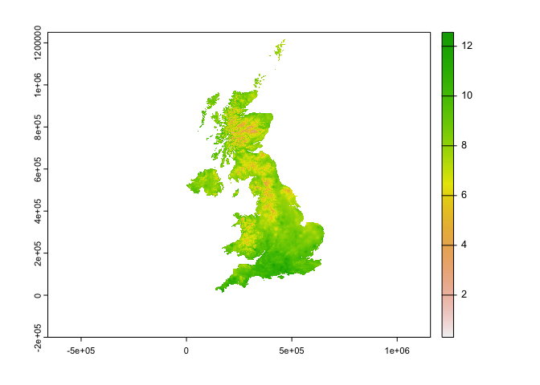
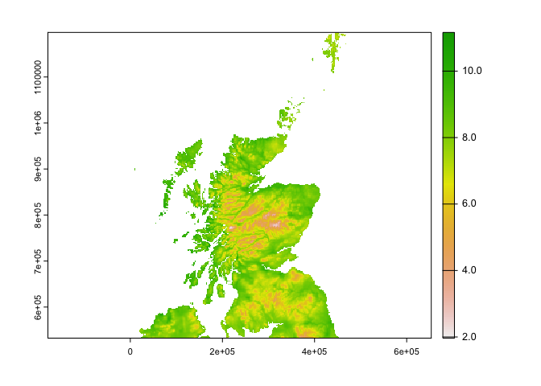
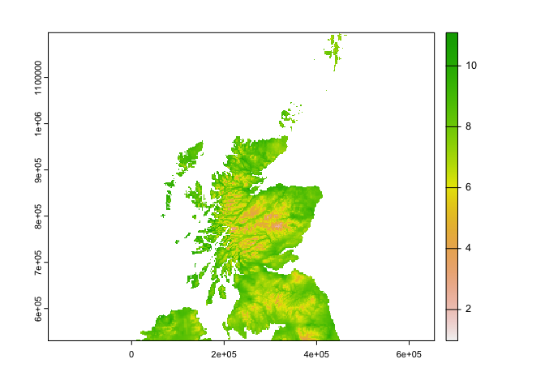
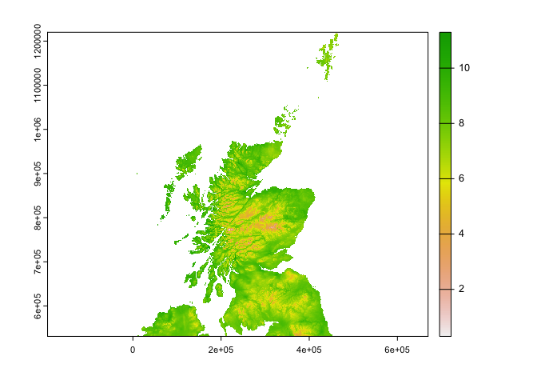
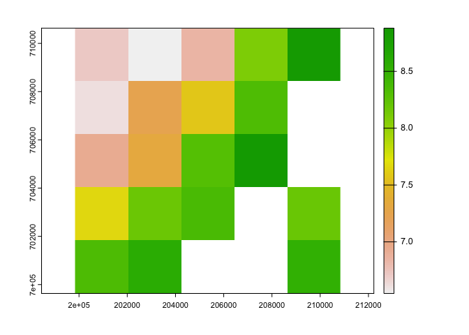
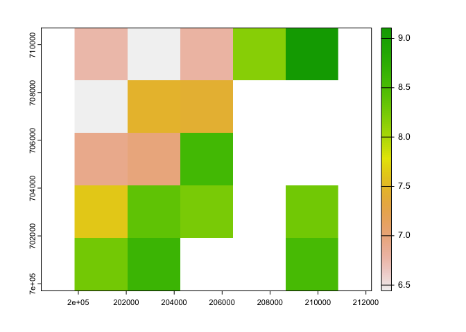
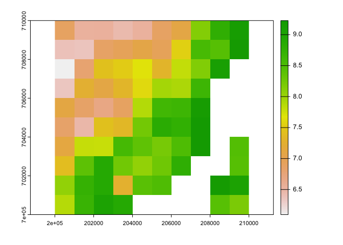
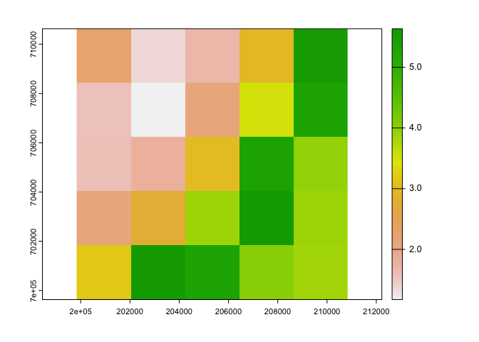

1 Comparing-Reprojections-HADs
rm(list=ls())
knitr::opts_knit$set(root.dir="/Volumes/vmfileshare/ClimateData/")
library(terra)
library(sp)
library(exactextractr)
dd <- "/Volumes/vmfileshare/ClimateData/"1.1 0. About
Bias correction techniques in general require observational data to compare with climate projections in order to appropriately correct the bias.
The HadUK grid is a 1km x 1km gridded dataset derived from meterological station observations.
The first UKCP product for review is the UCKP convection-permitting dataset, on a 2.2km grid. Therefore, we are resmapling the 1km grid using bilenear interpolation to 2.2km grid extent.
We have ran this seperately in both r and python. The aim of this doc is to:
- Ensure both methods produce the same result
- Ensure the grid has been resampled to the correct extent and CRS
1.2 1. Data
1.2.1 1a. HadUK grid resampled in R
Resampling script here The 2.2km grid was derived from a reprojected (to BNG) UKCP 2.2km .nc file
In resampling it resampled the Sea as xx so replacing those vals as NA
r1 <- paste0(dd,"TestData.R-python/Resampled_HADs_tasmax.2000.01.tif")
r1 <- rast(r1)#Contains 31 layers for each day of Jan
#In the resampling, the method used seemed to have relable all Sea values as '1.000000e+20' so relabelling them here (but to be checked as to why they've been valued like this in the resampling)
r1[r1 > 200] = NA
#check the crs
crs(r1, proj=T)
## [1] "+proj=tmerc +lat_0=49 +lon_0=-2 +k=0.9996012717 +x_0=400000 +y_0=-100000 +a=6377563.396 +rf=299.324961266495 +units=m +no_defs"
#Plot to check
plot(r1$tasmax_1)
1.2.2 1b. HadUK grid resampled in python
Resampling script here
THIS UPDATED 17/02/23
py.pros.tasmax <- list.files(paste0(dd,"Processed/HadsUKgrid/resampled_2.2km_newgrid/tasmax/day"))
r2 <- py.pros.tasmax[grepl("200001", py.pros.tasmax)] #Same file as resampled above
r2 <- paste0(paste0(dd, "Processed/HadsUKgrid/resampled_2.2km_newgrid/tasmax/day"),"/",r2)
r2 <- rast(r2)
crs(r2, proj=T) #check crs## [1] "+proj=tmerc +lat_0=49 +lon_0=-2 +k=0.9996012717 +x_0=400000 +y_0=-100000 +a=6377563.396 +rf=299.324961266495 +units=m +no_defs"## Ok so interesting is missing a crs slot on read - I wonder why this is? This could cause future problem potentially?
plot(r2$tasmax_1)
1.2.3 1c. Original HADUK grid
f <- paste0(dd, "Raw/HadsUKgrid/tasmax/day/")
hads.tasmax <- list.files(f)
hads.tasmax2 <- hads.tasmax[grepl("200001", hads.tasmax )] #Same file as resampled above
og <- paste0(f, hads.tasmax2)
og <- rast(og)
crs(og, proj=T)
## [1] "+proj=tmerc +lat_0=49 +lon_0=-2 +k=0.9996012717 +x_0=400000 +y_0=-100000 +a=6377563.396 +rf=299.324961266495 +units=m +no_defs"
plot(og$tasmax_1) ### 1d. UKCP example
For comparing the grids
f <- paste0(dd,"Processed/UKCP2.2_Reproj/tasmax_bng2/01/latest/tasmax_rcp85_land-cpm_uk_2.2km_01_day_19991201-20001130.tif")
ukcp <- rast(f)
ukcp.r <- ukcp$`tasmax_rcp85_land-cpm_uk_2.2km_01_day_19991201-20001130_31`
crs(ukcp.r, proj=T)
## [1] "+proj=tmerc +lat_0=49 +lon_0=-2 +k=0.9996012717 +x_0=400000 +y_0=-100000 +ellps=airy +units=m +no_defs"
#plot(ukcp.r)1.2.4 1e. Cropped extent
Just comparing by cropping to Scotland (bbox created here)
scotland <- vect("~/Library/CloudStorage/OneDrive-TheAlanTuringInstitute/CLIM-RECAL/clim-recal/data/Scotland/Scotland.bbox.shp")1.3 2. Comparisons
Crop extents to be the same
#Noticed the crop takes longer on r2_c - for investigation!
b <- Sys.time()
r1_c <- terra::crop(r1, scotland, snap="in")
e <- Sys.time()
e-b
## Time difference of 0.02198005 secs
plot(r1_c$tasmax_1)
b <- Sys.time()
r2_c <- terra::crop(r2, scotland, snap="in")
e <- Sys.time()
e-b
## Time difference of 33.57785 secs
plot(r2_c$tasmax_1)
og_c <- terra::crop(og, scotland, snap="in")
plot(og_c$tasmax_1) Ok there are some differences that I can see from the plot between the two resampled files!
## Cropping to a small area to compare with the same orginal HADS file
i <- rast()
ext(i) <- c(200000, 210000, 700000, 710000)r1_ci <- crop(r1_c, i)
plot(r1_ci$tasmax_1)
#Get number of cells in cropped extent
cells <- cells(r1_ci)
#get coords for all cells (for comparing above)
r.reproj_c_xy <- sapply(cells, function(i){xyFromCell(r1_ci, i)})
r.reproj_c_xy## [,1] [,2] [,3] [,4] [,5] [,6] [,7] [,8]
## [1,] 200935.7 203135.7 205335.7 207535.7 209735.7 200935.7 203135.7 205335.7
## [2,] 709531.7 709531.7 709531.7 709531.7 709531.7 707331.7 707331.7 707331.7
## [,9] [,10] [,11] [,12] [,13] [,14] [,15] [,16]
## [1,] 207535.7 200935.7 203135.7 205335.7 207535.7 200935.7 203135.7 205335.7
## [2,] 707331.7 705131.7 705131.7 705131.7 705131.7 702931.7 702931.7 702931.7
## [,17] [,18] [,19] [,20]
## [1,] 209735.7 200935.7 203135.7 209735.7
## [2,] 702931.7 700731.7 700731.7 700731.7ext(r1_ci)## SpatExtent : 199835.67457102, 210835.67457102, 699631.658882901, 710631.658882901 (xmin, xmax, ymin, ymax)r2_ci <- crop(r2_c, i)
plot(r2_ci$tasmax_1)
ext(r2_ci)## SpatExtent : 199842.521629267, 210842.521629267, 699702.676089679, 710702.676089679 (xmin, xmax, ymin, ymax)og_ci <- crop(og_c, i)
ext(og_c)## SpatExtent : 6000, 470000, 531000, 1220000 (xmin, xmax, ymin, ymax)plot(og_ci$tasmax_1)
ukcp_c <- terra::crop(ukcp.r, i)
plot(ukcp_c$`tasmax_rcp85_land-cpm_uk_2.2km_01_day_19991201-20001130_31`)
ext(ukcp_c)## SpatExtent : 199835.67457102, 210835.67457102, 699631.658882901, 710631.658882901 (xmin, xmax, ymin, ymax)#Get number of cells in cropped extent
cells <- cells(ukcp_c)
#get coords for all cells (for comparing above)
ukcp_c_xy <- sapply(cells, function(i){xyFromCell(ukcp_c, i)})
ukcp_c_xy## [,1] [,2] [,3] [,4] [,5] [,6] [,7] [,8]
## [1,] 200935.7 203135.7 205335.7 207535.7 209735.7 200935.7 203135.7 205335.7
## [2,] 709531.7 709531.7 709531.7 709531.7 709531.7 707331.7 707331.7 707331.7
## [,9] [,10] [,11] [,12] [,13] [,14] [,15] [,16]
## [1,] 207535.7 209735.7 200935.7 203135.7 205335.7 207535.7 209735.7 200935.7
## [2,] 707331.7 707331.7 705131.7 705131.7 705131.7 705131.7 705131.7 702931.7
## [,17] [,18] [,19] [,20] [,21] [,22] [,23] [,24]
## [1,] 203135.7 205335.7 207535.7 209735.7 200935.7 203135.7 205335.7 207535.7
## [2,] 702931.7 702931.7 702931.7 702931.7 700731.7 700731.7 700731.7 700731.7
## [,25]
## [1,] 209735.7
## [2,] 700731.7all(ukcp_c_xy, r.reproj_c_xy)## Warning in all(ukcp_c_xy, r.reproj_c_xy): coercing argument of type 'double' to
## logical
## Warning in all(ukcp_c_xy, r.reproj_c_xy): coercing argument of type 'double' to
## logical
## [1] TRUE